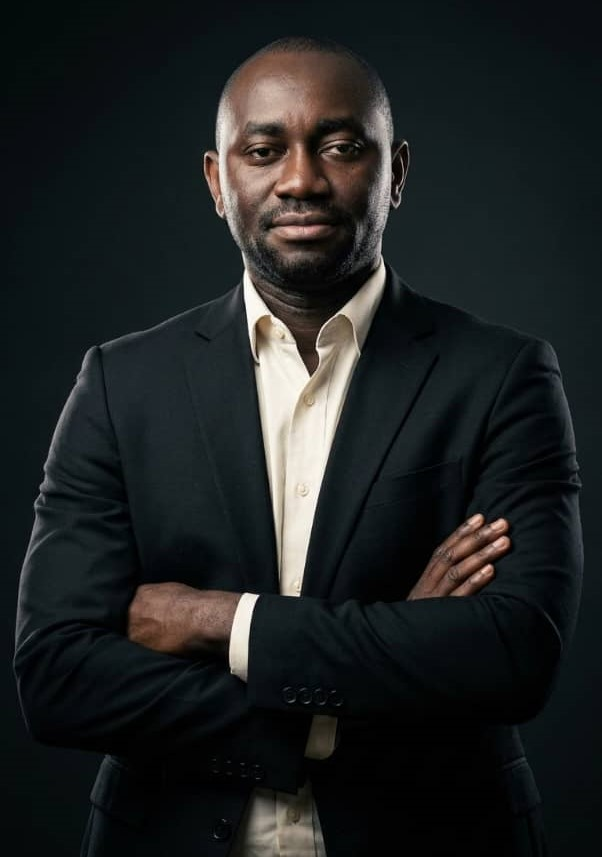
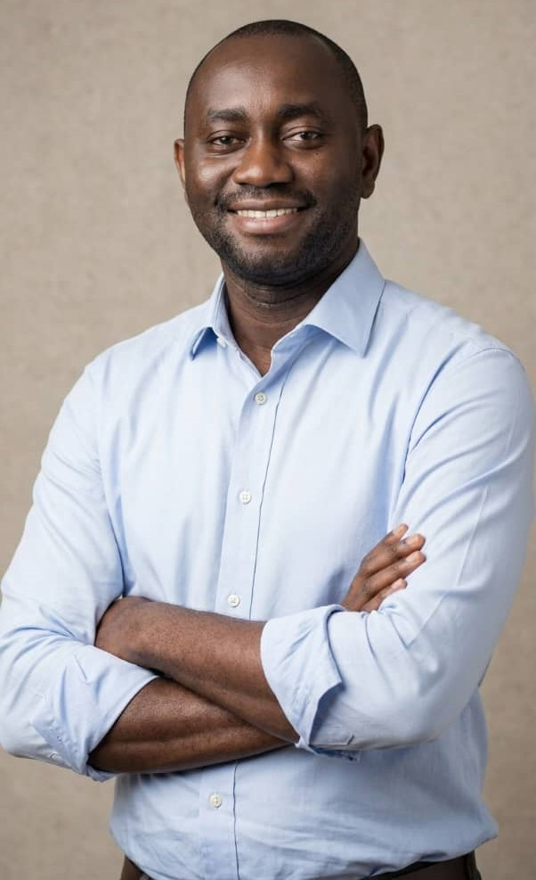

Guiding your organization with a clear technology vision.
Aligning IT strategy with business objectives for sustainable growth.
Artificial intelligence enhances consulting by driving innovation.
Enabling strategic decision-making for business success.
Empowering your teams with the skills and knowledge needed to excel.
Empowering global tech experts to contribute to the UK's thriving technology ecosystem.
Technology is best when it brings people together and increases their knowledge.
Strategic growth, funding, mentorship, scalability, innovation, and leadership.

"I hosted a tech event and Mr Bade Adesemowo, Co-Founder & CTO of eMigr8 AI gave a really great talk and insights on the UK Tech Talent Visa. It was really eye opening."
"It was a pivotal moment in my career, attending the event hosted by Bincom Dev Center. The event was hosted in collaboration with Bade Adesemowo and eMigr8 Tech Visa."
"Mr Bade is a very great leader with a visionary mindset. His vision pushes any team he leads forward. And he softwares have some of the best architectural strength i've seen."
"Bade Adesemowo is a pioneer in the ai space. His implementation of LLMs is done in an ethical and scalable framework. Its not just about implementing AI for him, its also about doing it right."